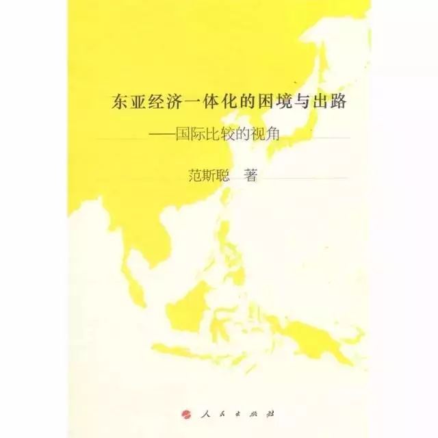

收录于合集


作 者 范斯聪
出 版 社 人民出版社二科
ＩＳＢＮ 9787010148849
内容简介
本书从东亚经济一体化的发展进程入手，论述了东亚在创造出所谓“东亚模式”的经济奇迹后，区域经济一体化的步伐却停而不前的原因，并以此为切入点，试图将东亚经济一体化置于欧洲、北美两个区域之中进行比较得出走出困境的突破口，即东亚经济整合的目标需要细化但应降低标准；东亚“南北”式的整合尚待扩大而各国需谨慎选择合作对象；整合方式需要循序渐进。这三个“突破口”为东亚经济一体化的发展提供了三条原则并贯穿始终，涵盖了安全合作、主导权、区域意识及外源性因素（即“3+1”）等走出困境的路径与方式。最后，经过对东亚地区国家、经济和精神文化三个方面总结性归纳，得出处理好国家、经济和精神文化三个方面的关系并使之互相配合与牵动是东亚成功的决定性因素。本选题是对东亚经济一体化繁荣发展的有益探索，为东亚经济圈的复兴和持久发展提供了道路。
作者简介
范斯聪，男，汉族，湖北武汉人。曾就读于北京大学国际关系学院国际政治系，获法学博士学位：2008—2010年赴美国杜克大学公派留学。现为武汉大学国际问题研究院教师、国家领土主权与海洋权益协同创新中心研究人员。
目录
导论
第一节 问题的提出及意义
第二节 相关文献回顾
一、东亚经济一体化的动力分析
二、东亚经济一体化难以深化的障碍
三、比较视野下的东亚经济一体化
第三节 研究方法、创新点和结构安排
一、研究方法
二、创新点
三、结构安排
第一章 东亚经济一体化的进程：历史与特点
第一节 东亚区域合作的酝酿及兴起
一、东亚区域合作的构想期
二、东亚区域合作的探索期
三、东亚区域合作的转折期
第二节 东亚区域合作的动力分析
一、东亚区域合作的外在动因
二、东亚区域合作的内在动因
第三节 东亚区域合作的特点与趋势
一、所谓“小马拉大车”现象
二、所谓“开放性”特点
三、安全阻力增强造成推动乏力
第二章 东亚区域合作的国别战略
第一节 日本的东亚区域合作政策
一、日本东亚区域政策的演变
二、21世纪日本的东亚区域合作政策
第二节 韩国的东亚区域合作政策
一、韩国东亚区域合作政策的基点
二、韩国的FTA战略
三、韩国重视区域合作的原因
第三节 东盟的东亚区域合作政策
一、东盟成立过程的简要回顾
二、东盟的区域政策选择
三、东盟区域政策的转变及原因
第四节 中国的东亚区域合作政策
一、中国的区域战略演变：核心理念与内容
二、中国东亚区域合作战略的基本实践
三、中国区域战略的背景分析
第三章 东亚合作的困境
第一节 核心国家缺失与外部压力共存
一、核心国家缺失
二、外部势力——关国的制约作用
第二节 政治安全困境
第三节 东亚区域意识难以形成认同的困境
一、东亚国家意识形态的巨大差异
二、东亚国家社会文化“被解构”
三、东亚经济民族主义泛滥
第四章 比较视角下的东亚经济一体化：过程与特点
第一节 欧洲经济一体化的主要过程及其政治解读
一、欧洲经济一体化的初创期
二、欧洲经济一体化遭遇“分裂期”
三、欧洲经济一体化实现“趋同期”
第二节 北美自由贸易区的发展过程及其政治解读
一、美国在北美自由贸易区发展过程中的作用
二、北美自由贸易区向心力的显现
三、北美自由贸易区正值“三角稳定期”
第三节 东亚经济一体化进程：比较与引申
一、为初始阶段设置适宜的发展目标
二、坚持有限的“开放性”
三、坚持多层次渐进整合模式
第五章 东亚经济一体化：借鉴与出路
第一节 实现东亚政治安全战略的可塑性选择
第二节 东亚主导权之争应采取平和心态
第三节 循序渐进培育区域意识
一、东亚区域意识的建立应从东北亚国家开始
二、东亚区域意识的构建途径：文化交流与经济合作手段的结合
结语
一、回顾与总结
二、呼唤新版中国东亚战略的出台
三、新现象与新问题
参考文献
后记
精彩书摘
《东亚经济一体化的困境与出路——国际比较的视角（J）》：
部分中国学者对两个或多个区域经济一体化组织进行比较或分析，得出了有益的结论。华晓红从理论与实践出发，详细分析了现有的国际区域经济合作的特点号性质，不仅从理论上而且也从实际需要出发为中国参与国际经济合作的决策提供了依据。汤碧以欧盟与亚太经合组织为研究对象，从统一市场与制度安排相符的角度系统地比较欧盟和APEC发展的历史、现状和走向，着重分析两者发展趋势的经济动因、条件和影响。张彬对包括欧盟和北美自贸区在内的多个区域经济一体化组织从制度、模式和福利效益等方面进行了细致的比较，给中国参与区域经济一体化的实践提出了建议。韦丽红、王汉君和崔同宜则将欧盟、北美自贸区与中国一东盟自贸区拿来比较，得出相互信任、共同政治意愿和高效的组织对中国一东盟自贸区有启示作用的结论。
因此，在国外的有关研究中，北美自贸区与东亚经济一体化的比较研究主要是利用北美自贸区将非东亚区域一体化为比较对象，转借其经验而展开的，直接用于东亚区域的经验十分少见。而我国学者则是在宏观比较的同时，利用北美自贸区最引人注目的争端机制，试图为东亚特别是中国建立的双边自贸区提供借鉴。这些内容为本文的写作提供了颇有价值的素材。不过，随着欧洲经济一体化与北美自贸区的不断发展，人们对东亚经济一体化的认识也在不断更新。在如此众多的内容中，如何将有利且相关的方面借鉴过来作为东亚经济一体化发展过程中的经验，这是本文需要展现的内容，同时，对两个区域经济一体化的范例的论述必须建立在一定的因果逻辑之上，使得某些经验具有有的放矢的效用。
……
更多阅读
国政学人 （ID：guozhengxueren)
为方便学人及时阅读高质量文章
别忘把国政学人设置 星标 哦~